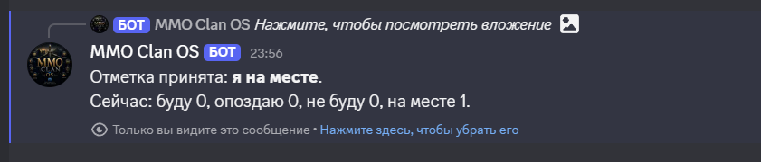

Один сервер - одна гильдия
Каждый Discord-сервер живет отдельно. У него свой список участников, свои рейды, свои DKP/очки и свой лут.
Полная инструкция
Эта страница объясняет не только кнопки, а весь бот целиком: как сервер подключается, кто дает доступ, какие есть роли, зачем нужен отдельный админ-канал и как гильдия живет внутри Discord.
/setup и /panelЧто это
MMO Clan OS создан для MMORPG-гильдий и кланов, где рейды, праймы, DKP/очки, лут, анонсы и права уже давно живут в Discord. Вместо хаоса из сообщений бот собирает управление в панели: человек регистрируется, рейд открывается кнопкой, очки фиксируются в базе, а доступ к функциям выдается только после одобрения.
У бота есть четкая логика: один Discord-сервер считается одной гильдией или кланом, данные серверов не смешиваются, а главный доступ контролирует владелец бота. Поэтому его удобно ставить и в маленький состав, и в сервис на несколько серверов сразу.
Как работает
Это важный момент: invite-ссылка сама по себе ничего не открывает. Пока сервер не одобрен владельцем бота, рабочие функции не работают.
Каждый Discord-сервер живет отдельно. У него свой список участников, свои рейды, свои DKP/очки и свой лут.
Сервер сначала попадает в очередь ожидания. Владелец бота решает, одобрить его или запретить.
После `/setup` обычная работа идет через кнопки и формы, без постоянного набора длинных команд.
Рейды, пользователи, права и DKP/очки хранятся отдельно по каждому серверу. Гильдии не мешают друг другу.
Один бот можно использовать сразу на нескольких Discord-серверах, если доступ каждому серверу одобрен отдельно.
Invite-ссылка это всего лишь приглашение бота на сервер. Даже если она утечет, левый сервер не получит доступ к функциям управления без одобрения.
Роли и права
Это помогает не отдавать полный контроль всем подряд. Админ управляет доступом, офицер ведет рабочие процессы, участник просто пользуется ботом.
Владелец бота НЕ ВИДИТ ВНУТРЕННИХ ДЕЛ КЛАНА! Одобряет серверы, запрещает левые заявки и задает срок доступа. Это глобальный контроль над сервисом.
Назначает права внутри гильдии, следит за порядком и настраивает работу бота на своем Discord-сервере.
Создает и закрывает рейды, ставит таймеры и анонсы, начисляет или списывает DKP/очки, записывает лут.
Регистрируется, смотрит списки и отмечается на рейдах. Ему не нужны сложные команды.
Доступ и безопасность
После добавления бота сервер получает статус ожидания. Это нужно, чтобы на бот не могли просто так сесть случайные гильдии или левые Discord-серверы.
Владелец бота видит заявки в своей панели, может одобрить сервер, запретить его или поставить срок доступа. Когда срок заканчивается, рабочие функции отключаются до продления.
Такой подход позволяет держать бот как сервис: доступ контролируется, данные каждой гильдии изолированы, а пользователи чужих серверов не получают лишние права.
Для чистой работы в админ-канале боту нужны права: Просматривать канал, Отправлять сообщения, Читать историю сообщений, Встраивать ссылки, Использовать команды приложения. Право Управлять сообщениями желательно включить, чтобы команда /panel могла удалять старые панели перед созданием новой.
Что умеет панель
Панель общая для КЛ, админов и офицеров. На ней остаются быстрые действия и вход в Мой кабинет. Если чат уехал вниз или панель потерялась, введите /panel в админ-канале: бот попробует удалить старые панели в этом канале и создаст свежую панель снизу.
Мой кабинет - это личное меню. В нем лежат участники, рейды, таймеры, очки, лут, права, подписка и настройки игры. Внутри разделов есть кнопки Назад и Обновить. Кнопка Закрыть находится на главном экране кабинета.
Важно: списки, ошибки, выборы и промежуточные ответы Discord показывает лично тому, кто нажал кнопку. Другие админы эти сообщения не видят и не мешают друг другу.
Общая панель лежит в админ-канале и доступна КЛ, админам и офицерам с правами.
Мой кабинет открывается личным сообщением Discord. Дальше человек ходит по разделам внутри одного личного меню и может вернуться кнопкой Назад.
Свежая панель создается командой /panel. Если боту выдано право Управлять сообщениями, старые панели в этом канале будут удалены автоматически.


Связывает Discord-аккаунт с игровым ником, классом и группой/статиком. Без этого гильдии тяжелее вести учет людей.
Показывает список зарегистрированных людей. Удобно проверять, кто уже внесен в систему.
Создание, список, фильтры по датам и закрытие рейда. Здесь же живут кнопки участия и отчет по рейду.
Напоминания о боссах, рейдах, осадах и любых важных событиях. Можно задать несколько уведомлений перед временем.
Ручное начисление и списание DKP/очков, если нужно исправить награду, добавить бонус или обработать опоздавшего.
Запись выданных предметов, стоимости и получателя. История лута остается в боте, а не в памяти офицера.
Назначение ролей `Админ`, `Офицер`, `Участник` и отзыв доступа тем, кто больше не должен управлять гильдией.
Проверка доступа к рабочим функциям. Если срок закончился, панель подскажет, что делать дальше.
Типичный сценарий
Здесь видно, что бот закрывает не одну кнопку, а весь привычный цикл MMO-сообщества.
Гильдия получает invite-ссылку, владелец бота одобряет сервер, а админ создает приватный канал для управления ботом и запускает в нем `/setup`.
Через /panel открывают общую панель, затем нажимают Мой кабинет и работают с личным меню. Если панель уехала вверх, команду можно ввести снова: старая панель в этом канале будет удалена, а новая появится снизу.
Указывает название, время, DKP и напоминания. Участники отмечаются кнопками `Буду`, `Я на месте`, `Опоздаю`, `Не буду`.
Бот показывает отчет по участникам, а DKP начисляется только тем, кто реально был на месте.
Короткие ответы
Нет. В обычной работе нужны только `/setup` и `/panel`. Все остальное делается внутри панели.
Чтобы не терять управление ботом в обычном чате гильдии. Там удобнее держать рейды, DKP/очки, права, анонсы и лут.
Панель видят все админы и офицеры, у кого есть доступ к каналу. Но Мой кабинет, списки, ошибки, выборы и подсказки Discord показывает лично тому, кто нажал кнопку. Другие КЛ/ПЛ эти ответы не видят.
В разделах личного кабинета есть кнопка Назад. Она возвращает в главный экран Мой кабинет. Кнопка Обновить пересчитывает текущий раздел. Закрыть кабинет можно с главного экрана кабинета.
Их можно скрыть ссылкой «Нажмите здесь, чтобы убрать его» внизу сообщения. Это личные ответы Discord, они не засоряют канал для остальных людей.
Команда создает свежую панель в текущем канале. Если у бота есть право Управлять сообщениями, он сначала удалит старые панели бота в этом же канале.
Да. Каждый Discord-сервер хранится отдельно, а доступ к нему выдается владельцем бота отдельно.
Рабочие функции перестают работать, пока владелец бота не продлит срок доступа.
Готово к использованию
Сначала одобрение сервера, потом `/setup`, затем `/panel` и работа через кнопки. Именно так MMO Clan OS остается понятным даже для большой MMORPG-гильдии.
Вернуться на главную